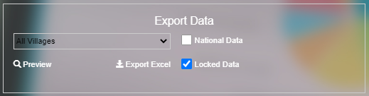

Third Party
Some task is run by .exe file
Notification (case)
Multi thread message purpose we use
\media\Message\MIS Notification.exeOther library: Firebase cloud message.
Git repository
https://gitlab.com/rattana/mis-notification.git
Export Tool (on home page)
{kind=link}
To speed up export data to excel we use
\media\ExportExcel\MISExcel.exeGit repository
https://gitlab.com/mis-projects/mis-excel.git
Daily task (cron job)
Daily task cron job execute
C:\MIS\Task Scheduler\MIS Daily Task.exefor dashboard data and pivot data. This cron job run by windows task scheduler every day.Git repository:
https://gitlab.com/mis-projects/mis-task-scheduler.git
Monthly task (cron job)
Monthly task cron job execute
C:\MIS\Task Scheduler\MIS Monthly Task.exefor log HF and VMW. This cron job run by windows task scheduler every month.Git repository:
https://gitlab.com/mis-projects/mis-task-scheduler.git
DB Backup (cron job)
DB Backup task cron job execute
C:\MIS\Task Scheduler\MIS DB Backup.exeto run backup data. This cron job run by windows task scheduler every day. Backed upd data will store on google driveGit repository:
https://gitlab.com/mis-projects/mis-db-backup.git